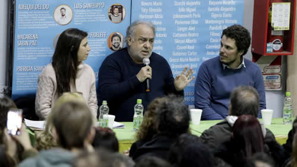

Real Chubut - Agencia de Noticias


"Lo que hizo Macri fue destituirse como presidente"

Alemán reflexiona sobre el resultado de las elecciones primarias, la reacción de Macri y el rol de Alberto Fernández. "Vivimos en un período donde todo puede volver a pasar, por eso hay que cuidar mucho este proyecto y el resultado electoral", dice.
"Macri realizó una gran extorsión, les pidió a sus amos -que no sabemos bien quiénes son- que nos castigaran. Pero lo que en cierta forma hizo fue destituirse como presidente", dijo el psicoanalista Jorge Alemán, refiriéndose al discurso que pronunció Mauricio Macri el pasado lunes. En diálogo con PáginaI12, el autor de Capitalismo. Crimen perfecto o emancipación analizó el triunfo electoral del Frente de Todos en las elecciones del domingo, la figura de Macri y la de Alberto Fernández: "Pienso que Alberto Fernández tomó verdaderamente el liderazgo del proyecto cuando contrapuso a los jubilados con las Leliq", dijo.
-En base a los resultados del domingo, ¿se puede decir que existe una identidad del pueblo argentino que no se deja capturar por discurso neoliberal?
-Sí, pero se trata de algo más misterioso y enigmático porque una identidad tiene contornos y límites. En la noche electoral surgió algo del orden de lo excepcional, de lo extraordinario. Si tenemos en cuenta cómo está oscureciendo el mundo, el tipo de discurso que va atravesando las naciones y cómo se están configurando las nuevas culturas políticas, hay muchas razones para emocionarse por lo sucedido. El resultado del domingo no basta explicarlo como consecuencia de la pésima situación económica -un factor que no podemos relativizar-, también creo que este país tiene un rasgo que lo distingue. Hay una combinación entre una gran mitología fundacional surgida del peronismo más distintas prácticas emancipatorias, que atravesaron el 17 de octubre, Eva Perón, las Madres de Plaza de Mayo, la tendencia en los '70 y luego todo lo que reactualizó el kirchnerismo, que dan lugar a un sujeto político que la derecha nunca logra disolver del todo y que constantemente retorna. Todo el aparato mediático y los sicarios que fueron encargados de intentar desactivar a ese sujeto fracasaron y se ha mantenido, gracias a las decisiones populares, esta secuencia simbólica que ha provocado el enorme resultado electoral.
-La conferencia de prensa que dio Macri el lunes estuvo fuertemente centrada en la supuesta reacción de los "mercados". ¿Qué opina de eso?
-Macri se victimizó y amenazó. Dijo que el pueblo se había equivocado y que iba a recibir un castigo porque hay "un mundo" y "unos mercados" -que no se sabe bien cuáles son- que no están conformes con la decisión popular. En su discurso pareciera que en Argentina hay una tierra promisoria de inversiones que el kirchnerismo desconoce y que en cambio él conoce porque "está en el mundo". Lo cual es falso porque hace tiempo las páginas económicas de la prensa de derecha que circulan en Europa dicen que la economía argentina es un desastre y que el Presidente es un inepto. Macri realizó una gran extorsión, les pidió a sus amos que nos castigaran. Pero lo que en cierta forma hizo fue destituirse como presidente. Se erige como representante de los mercados, pero si los representara hubiera habido inversiones durante su gobierno y no las hubo.
-¿A qué se refiere cuando dice que Macri es un cínico?
-Yendo a la acepción clásica es alguien que piensa exclusivamente en su modo de gozar sin atenerse a ninguna de las consecuencias que eso conlleva. Hace un tiempo circuló un texto, que me adjudicaron y no era mío, que decía que Macri es un psicópata. No diría psicópata, el lunes lo vi bastante loco. De hecho el señor que lo acompañaba -Miguel Ángel Pichetto- parecía asustado del hombre que tenía al lado. En un momento dijo: "Sigue en funciones". Claro, se ve que tan mal no está Pichetto como para no darse cuenta de que Macri estaba realizado una operación extraña. Pedir una autocrítica a quienes sacaron 17 puntos de ventaja es algo que no tiene precedentes.
-¿Cómo ve la coalición que logró el Frente de Todos? ¿Cree que está bien la incorporación de sectores que quizás tienen distintas posiciones?
- Dado el contexto mundial no me parece mal que se haya elegido un antagonismo mínimo. Que se haya puesto como antagonista a los bancos, las Leliq, la financiarización. No era el momento de plantear un bloque hegemónico de otro tipo, era momento de consolidarse. Ha sido muy duro lo que ocurrió en estos años. El ejercicio de sumar voluntades, que al principio parecieran ser un poco conservadoras, es acertado. De ahí el nombre "Frente de Todos". Sin embargo el "todos" no es "el todo". Un "todo" siempre está descompletado, tiene que tener algún tipo de exterior constitutivo que es el adversario y ese elemento es el que le da sustancia al antagonismo. Pienso que Alberto Fernández tomó verdaderamente el liderazgo del proyecto cuando contrapuso a los jubilados con las Leliq y cuando planteó que el "todos", a pesar de que lógicamente sea una coalición, tiene ese límite.
-¿Qué queda en estos meses? ¿Cree que hay peligro de un avance más coercitivo por parte del Gobierno?
-Sí, porque les va a costar mucho abandonar el gobierno. Están implicados en operaciones de las cuales van a tener dificultades para dar cuenta. Hay que pensar cómo va a ser el desenlace porque sabemos que Macri es capaz de todo, no tiene ningún límite y forma parte de una banda que está gobernada por algo que no tiene barreras. He vivido bajo gobiernos de derecha en España y nunca asistí a nada semejante. Hay que tener cuidado y no aceptar las provocaciones que le sirvan al Gobierno para decir: "La situación es caótica y por eso hay que decretar el estado de sitio". Hemos vivido momentos durísimos de nuestra historia para saber que no tenemos que ir a donde nos están esperando.
-Más allá del resultado de las elecciones, ¿qué importancia tiene dar la batalla cultural?
-Va a ser clave la participación del feminismo, de los jóvenes, la construcción de nuevas lógicas comunicativas que rompan con la feria mediática de colaboracionistas. Hay que aprovechar lugares que incluso están más allá del Estado, que surgen de las comunidades mismas. Hay que tener muchas superficies de inscripción de prácticas emancipatorias que erijan modos de transmisión nuevos: en el cine, en la literatura, en las revistas y Argentina tiene en ese sentido un caudal privilegiado. Vivimos en un período donde todo puede volver a pasar, por eso hay que cuidar mucho este proyecto y el resultado electoral. Es un mito ilustrado eso de que hay conquistas irreversibles.
Entrevista: Melisa Molina.
Fuente: Página 12